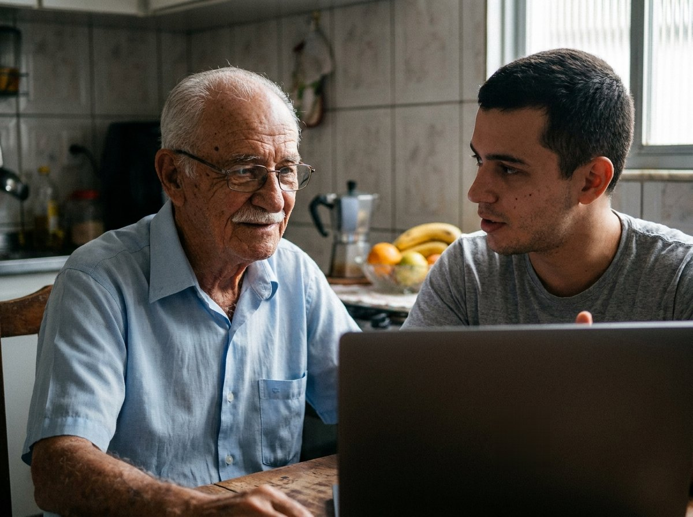
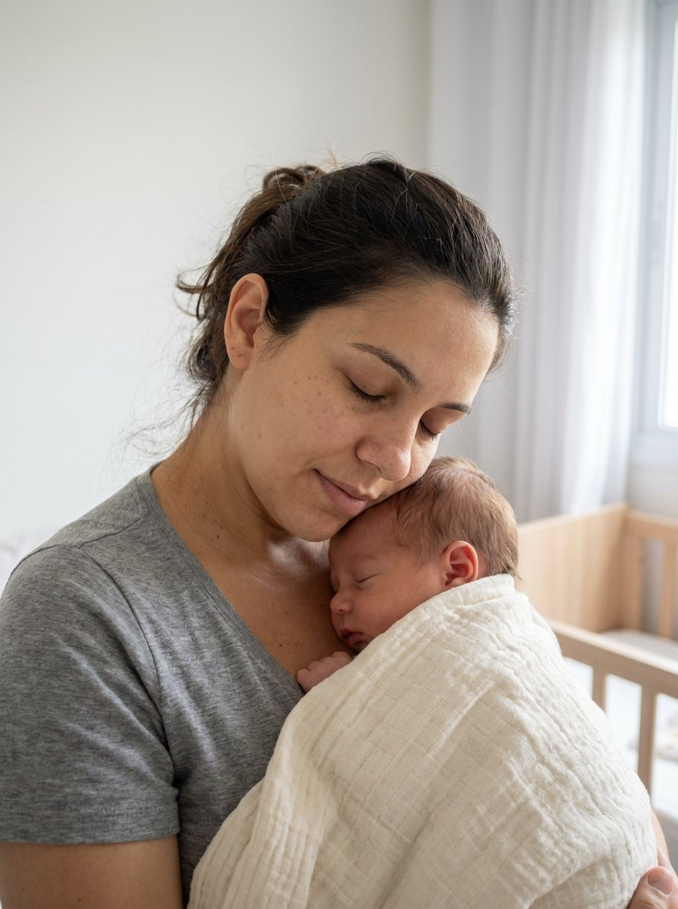

Advocacia previdenciária para você e sua família
Orientação jurídica em questões com o INSS, com atenção especial ao BPC/LOAS para idosos e ao salário-maternidade, inclusive quando o benefício foi negado.
Como podemos ajudar
A atuação desta página se concentra em dois benefícios. Cada caso é avaliado a partir dos documentos e das circunstâncias de quem procura orientação.
BPC/LOAS para idoso
Para pessoas com 65 anos ou mais
- Benefício negado pelo INSS
- Benefício suspenso ou cessado
- Primeiro pedido do benefício
- Questões relacionadas ao CadÚnico
- Análise da composição da renda familiar
Salário-maternidade
Para mães e para quem adotou
- Benefício negado
- Benefício não recebido
- Situações de desemprego
- MEI e autônomas
- Trabalhadoras rurais
- Adoção ou guarda judicial

Seu familiar tem 65 anos ou mais?
O BPC pode atender pessoas idosas que preencham os requisitos previstos para o benefício assistencial. Quando o pedido é negado, suspenso ou interrompido, é importante entender o motivo apresentado pelo INSS e verificar a documentação e a situação familiar.
A idade é um dos requisitos, mas não garante o benefício por si só. Por isso cada situação é analisada individualmente.
Teve um bebê ou adotou uma criança?
O salário-maternidade pode envolver diferentes situações, inclusive casos em que a mãe estava desempregada, trabalhava como autônoma ou MEI, exercia atividade rural ou teve o benefício negado.
- Benefício negado
- Desempregada no período do nascimento
- MEI ou autônoma
- Trabalhadora rural
- Adoção ou guarda judicial

Recebeu uma negativa do INSS?
A negativa não deve ser analisada apenas pelo resultado final. O motivo apresentado pelo INSS, os documentos disponíveis e as circunstâncias de cada caso são importantes para definir quais caminhos podem ser avaliados.
Comunicado de decisão
Motivo da decisão
Documentos do caso
- Etapa 1
Entenda o motivo da negativa
- Etapa 2
Reúna os documentos
- Etapa 3
Analise a situação
- Etapa 4
Verifique as possibilidades jurídicas
Cada caso tem particularidades. A análise serve para entender a situação e avaliar os caminhos possíveis, sem promessa de resultado.
Falar com um advogadoComo funciona
Um caminho simples, do primeiro contato à orientação sobre o seu caso.
Você entra em contato
Conte brevemente o que aconteceu.
O caso é analisado
São avaliadas as informações e os documentos apresentados.
Você recebe orientação
Com base na análise, são explicados os caminhos possíveis para a situação.
Sobre o escritório
O escritório Carlos Aiello Advocacia atua na orientação jurídica de pessoas idosas e de suas famílias em pedidos de BPC/LOAS, e de mães em situações relacionadas ao salário-maternidade.
Cada atendimento começa pela escuta. A partir do relato e dos documentos, a situação é analisada com atenção e os caminhos possíveis são explicados em linguagem simples, para que a pessoa e a família entendam cada etapa.
Dúvidas frequentes
Respostas gerais e informativas. A situação de cada pessoa depende de análise individual.
Falar com um advogadoO BPC é um benefício assistencial previsto na Lei Orgânica da Assistência Social (LOAS). Para a pessoa idosa, a lei exige 65 anos ou mais e renda familiar por pessoa dentro do limite previsto, entre outros requisitos, como a inscrição atualizada no CadÚnico. Não é necessário ter contribuído para o INSS.
Quer entender a sua situação?
Envie seus dados para entrar em contato com a equipe e apresentar o seu caso.